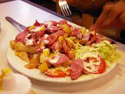

Que es la salchipapa

La salchipapa es una comida rápida típica de América Latina, especialmente de Perú, Colombia y Bolivia. Se trata de un plato compuesto por papas fritas y salchichas, que se sirven con una variedad de salsas, como ketchup, mostaza, mayonesa y ají. La salchipapa es un plato muy popular, ya que es económico, fácil de preparar y delicioso. Las salchipapas se suelen preparar con salchichas de Frankfurt o Viena, y papas fritas cortadas en tiras largas y finas. Se sirven con una variedad de salsas, como ketchup, mostaza, mayonesa y ají.
El origen de la salchipapa se remonta a la década de 1970 en Lima, Perú. Se cree que fue creada por vendedores ambulantes que buscaban un plato rápido y sabroso que pudiera satisfacer a un público diverso. La salchipapa se extendió rápidamente por toda América Latina, y hoy en día es un plato popular en países como Colombia, Ecuador, Bolivia y Argentina. La salchipapa es un plato importante para la sociedad culinaria por varias razones. En primer lugar, es un plato sencillo y económico, que se puede encontrar en puestos callejeros, restaurantes y hasta en supermercados. Esto lo hace accesible para personas de todas las clases sociales, y lo convierte en una opción popular para comidas rápidas y informales.
Además de los aspectos mencionados anteriormente, la salchipapa también es importante para la sociedad culinaria porque es un plato que promueve la creatividad y la innovación. Los cocineros y emprendedores han creado nuevas variantes de la salchipapa, con diferentes ingredientes y sabores. Esto ha contribuido a enriquecer la gastronomía latinoamericana y a hacerla más atractiva para personas de todo el mundo. En conclusión, la salchipapa es un plato importante para la sociedad culinaria por su accesibilidad, versatilidad, inclusividad, identidad cultural y capacidad para promover la creatividad y la innovación. Es un plato que representa lo mejor de la gastronomía latinoamericana, y que es disfrutado por personas de todas las edades, clases sociales y culturas.